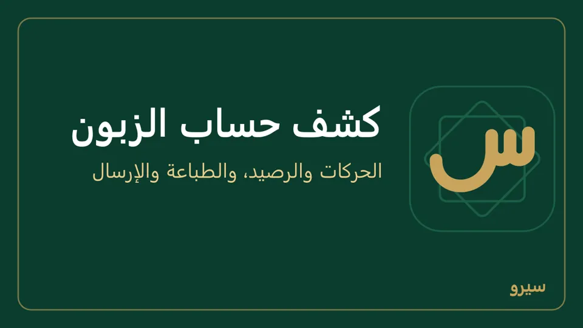

أين أجد…
- الربح والمبيعات والنقدية: الرئيسية، واختر اليوم أو الشهر أو السنة. النقدية مجموع كل الصناديق والبنوك وطرق الدفع وعهدة المندوبين، بعملة الدفاتر، فهي أكبر من رصيد الصندوق وحده؛ اضغطها لترى حركاتها كلها ورمز كل حساب بجانب الحركة. في دفاتر بالدولار يدخلها صندوق الليرة بالدولار بأسعار صرف حركاته.
- كم في كل صندوق أو محفظة وحدها (الدرج، شام كاش، سيرياتيل كاش، البنك): لكل صندوق وطريقة دفع حسابه، ورصيده سطر في ميزان المراجعة في المحاسبة، على الكمبيوتر والجوال؛ اضغطه لترى دفتره حركةً حركة. هذا ما يجب أن يكون معك في كلٍّ منها؛ عدّ ما معك وقارنه. والنقدية في الرئيسية مجموعها كلها، لا رصيد واحد منها.
- ما لي وما عليّ: في الرئيسية أيضاً، والتفصيل في صفحة كل زبون أو مورد.
- الزبائن لحالهم والموردون لحالهم: في العملاء والموردون على الكمبيوتر اضغط الزبائن أو الموردون فوق القائمة لتراجع ديون كل جهة لحالها، والكل يرجّعهم مع بعض؛ اسم «زبون ومورد» يظهر بالاثنتين، والبحث يبحث داخل ما اخترته. على الجوال هما قائمتان أصلاً: الزبائن والموردون.
- حركة الديون: كل الزبائن والموردين في قائمة واحدة: حركة الديون في التقارير، مع Excel وPDF، وفيها كل سطر باسم الزبون أو المورد كما في كشف حسابه، ومنها تأمين الإيجار باسم حسابه «تأمينات الإيجار». لزبون أو مورد واحد: كشف حساب، فيه كل دين وكل دفعة على الحساب ورصيده، لا الفاتورة المدفوعة كلها عند الحفظ (أين تجدها). ومن عليه كم اليوم: أرصدة الزبائن والموردين في التقارير. والمتأخر: الاستحقاقات (كيف).
- كشف حساب زبون: صفحة الزبون ← اختر المدة: هذا الشهر أو هذه السنة أو الكل، أو اكتب من وإلى واضغط عرض، ثم كشف حساب للطباعة، أو تصدير Excel بجانبه: ملف بحركات المدة نفسها ومدينها ودائنها ورصيدها (وعلى الجوال تصدير Excel في كشف حساب). ويُرسل نصاً أيضاً. كل سطر يبدأ برقم قيده: يفتح القيد لمن له المحاسبة، ولغيره يفتح الفاتورة التي صنعته، وسند لغيره يقول «إلغاء السند لمن معه صلاحية المحاسبة». مدين ودائن والرصيد بعملة الدفاتر، وبجانب كل سطر مبلغه بعملته إن كان بعملة أخرى: فاتورة أو مرتجع أو إشعار، أو رصيد افتتاحي بقي بعملة أخرى، أو سند عبر صندوق بعملة أخرى أو على فاتورة بها. اسم حركاته الأجنبية كلها بعملة واحدة (زبون بالليرة في دفاتر بالدولار، أو حسابه بالدولار) يُعرض كشفه بعملة حسابه، وفوقه على الكمبيوتر والجوال بعملة حسابه وبعملة الدفاتر (الشرح). هذا على الشاشة والمطبوع والنص المرسل، وفي Excel عمودان زائدان بعملة الفاتورة والعملة. سطر إلغاء فاتورة يقول «إلغاء فاتورة بيع INV-5» بدل «عكس القيد»، وسطر إلغاء سند يقول «عكس القيد #…». اسم هو زبون ومورد معاً: جدول فواتير مفتوحة يقول لنا أو علينا في كل سطر، والمجموع رقم لكل جهة، لا يُجمعان معاً. كشف مدة انتهت عنوان جدوله فواتير مفتوحة اليوم: ما بقي مفتوحاً اليوم من فواتير تلك المدة، لا ما كان مفتوحاً يومها، ولا فاتورة بعد نهاية المدة، فلا يساوي بالضرورة رصيد آخر المدة. ومشاركة النص من صفحة الطباعة يرسل نص الورقة كاملاً: كل الحركات، وعملة الفاتورة، ولغة القارئ. أسماء الأصناف تظهر على الشاشة دائماً، وعلى الورقة وPDF إلا إذا عُلّم كشف حساب عام (مدين ودائن أولاً، نوع المستند ورقمه بلا أصناف، التاريخ آخراً): كشف مطبوع برقم الفاتورة فقط، بلا أسماء المنتجات، هذا سببه، وتُزال العلامة من قوالب الطباعة. لكشف عام بترتيب السوق (مدين ودائن يميناً، نوع الفاتورة ورقمها، التاريخ يساراً، والرصيد التراكمي مع إمكانية إخفائه): قوالب الطباعة.
- أرصدة كل الزبائن والموردين على ورقة واحدة: التقارير ← اختر البيانات أرصدة الزبائن والموردين (لمن يرى المحاسبة)، وإلى تاريخ الرصيد: سطر لكل اسم له رصيد، ونوعه، ورصيده (لنا موجب، علينا سالب)، وآخر حركة. ثم Excel أو CSV أو طباعة / PDF. وكشف الحساب بالحركات يبقى لكل زبون من صفحته.
- ميزان المراجعة والقيود: المحاسبة. وما لا يتفق في الدفاتر: فحص الدفاتر.
- الميزانية العمومية وقائمة الدخل: القوائم المالية.
- الحسابات نفسها وإضافة حساب: دليل الحسابات.
- قيد، بنك، شيكات، موازنة، أصول، أسعار صرف، ضريبة: قيد يدوي، البنك، الشيكات المؤجلة، الموازنة والمراكز، الأصول الثابتة، أسعار الصرف، التقرير الضريبي.
- تقارير حسب الصنف أو الزبون أو الفترة: التقارير، مع تصدير CSV يفتحه Excel.
- يوم واحد، اليوم أو أي يوم سابق: ملخص اليوم: ما بيع صنفاً صنفاً وفواتير اليوم. الشرح.

على الجوال: الأرباح والميزانية وملخص اليوم في مجموعة المال والتقارير، والتقارير في مجموعة التقارير، والقيود والحسابات في مجموعة المحاسبة. كشف حساب الزبون: الزبائن ← الزبون ← كشف حساب، واختر هذا الشهر أو هذه السنة أو الكل، ثم مشاركة PDF أو طباعة (كيف). اضغط سطراً فيه: يفتح مستنده، أو قيده لمن له المحاسبة، ومن القيد يُعدَّل السند أو يُلغى. وفي صفحة الزبون آخر الفواتير لا تعرض الفواتير الملغاة ولا المستبدلة، وكل سطر بعملة فاتورته ومعه مدفوعة أو غير مدفوعة أو بانتظار الموافقة، وفاتورة بانتظار الموافقة تفتح الفاتورة لا المرتجع. وزبون لا شيء عليه يقول الرصيد: لا شيء.
### تقرير بعملة أخرى {#show-currency} كلمات: عرض بالدولار، تقرير بالدولار، ميزانية بالدولار، قائمة الدخل بالدولار، ميزان المراجعة بالدولار، دفتر الحساب بالدولار، ملخص اليوم بالدولار، سعر نهاية الفترة اختر العرض بعملة (تظهر العملات المفعّلة) في:
- على الكمبيوتر: قائمة الدخل، الميزانية العمومية، منشئ التقارير، ميزان المراجعة، دفتر الحساب (اضغط حساباً في ميزان المراجعة)، الفروع، مراكز الربحية، ملخص اليوم.
- على الجوال: الأرباح والخسائر، الميزانية العمومية، التقارير، ميزان المراجعة، دفتر الحساب، الفروع، مراكز الربحية، ملخص اليوم.
كل مبلغ من الدفاتر يُقسم على سعر واحد: سعر آخر الفترة (في ملخص اليوم: سعر ذلك اليوم)، أو ما تكتبه في بسعر (على الجوال سعر آخر الفترة). بهذا تبقى المجاميع صحيحة والميزانية متوازنة. الطباعة وPDF تحمل الاختيار نفسه. هذا عرض فقط، ولا يغيّر الدفاتر، والكميات وعدد الفواتير تبقى كما هي. فاتورة بعملة أخرى تبقى بعملتها، وعمود صندوق العملة في دفتر حسابه يبقى بعملة الصندوق. التقرير الضريبي يبقى بعملة الدفاتر، لأنه ما يُقدَّم للمالية. وإن لم يكن للعملة سعر يقول لك البرنامج، فاكتبه في أسعار الصرف (أين).
ليس هذا ما كان في يده كل يوم: المبيعات القديمة تظهر بسعر اليوم الأخير، لا بسعر يومها. وللربح الحقيقي بالدولار تكون دفاترك بالدولار من البداية.